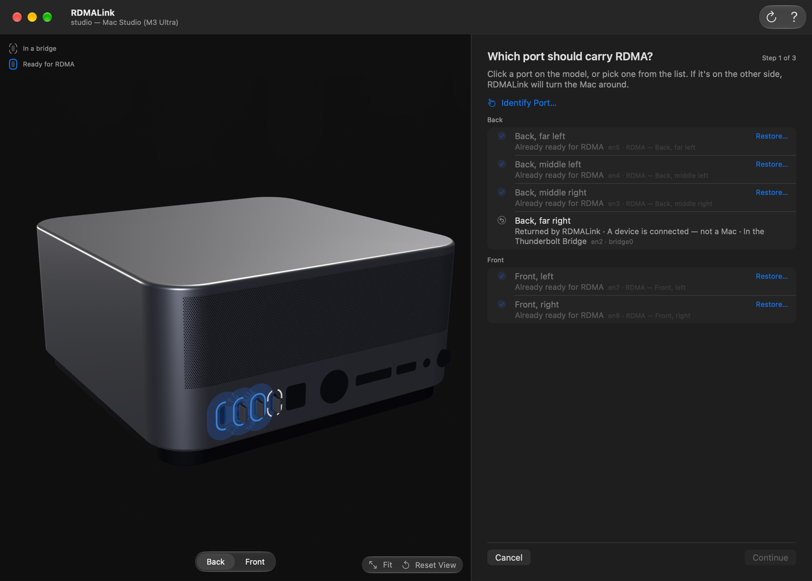
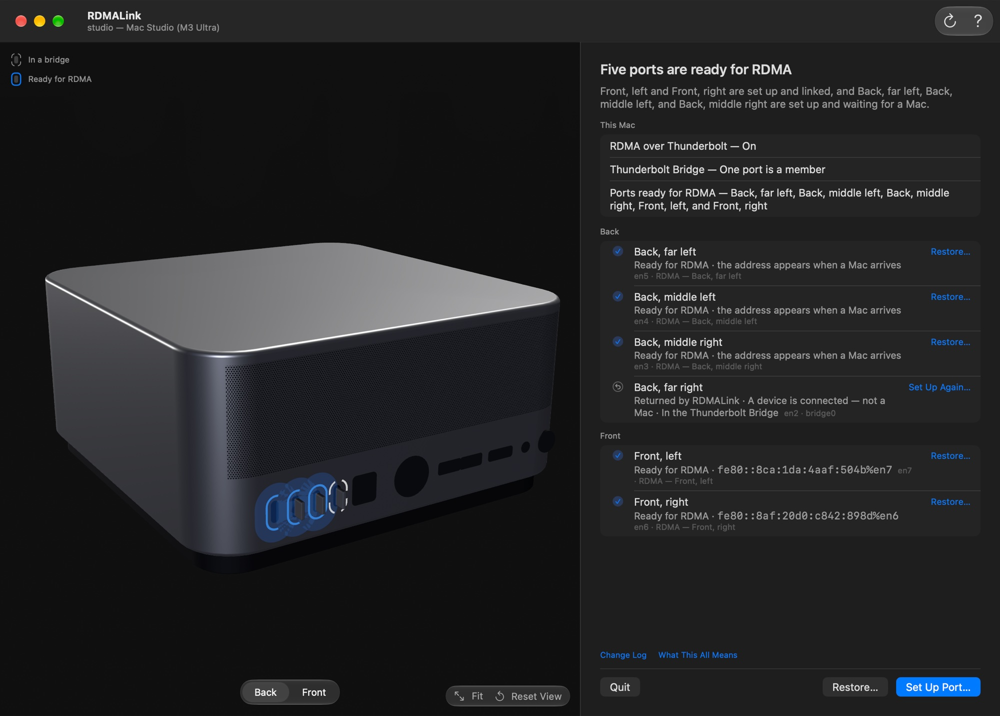
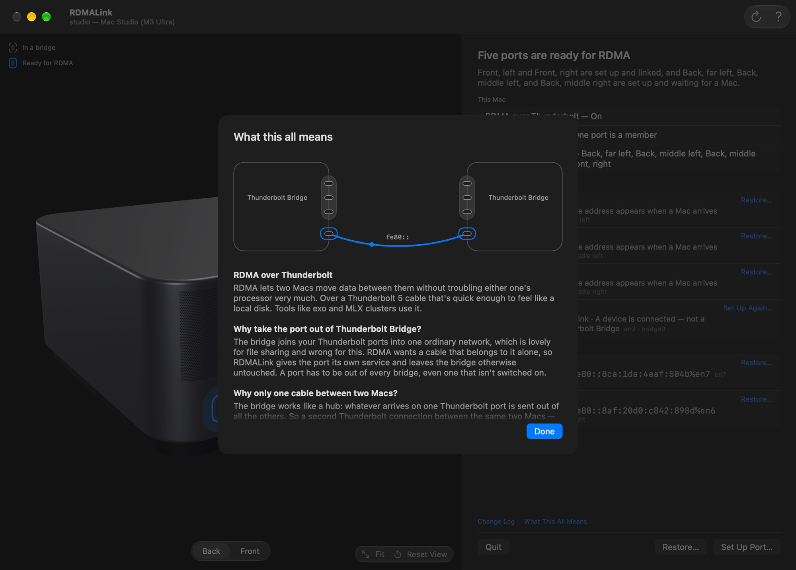
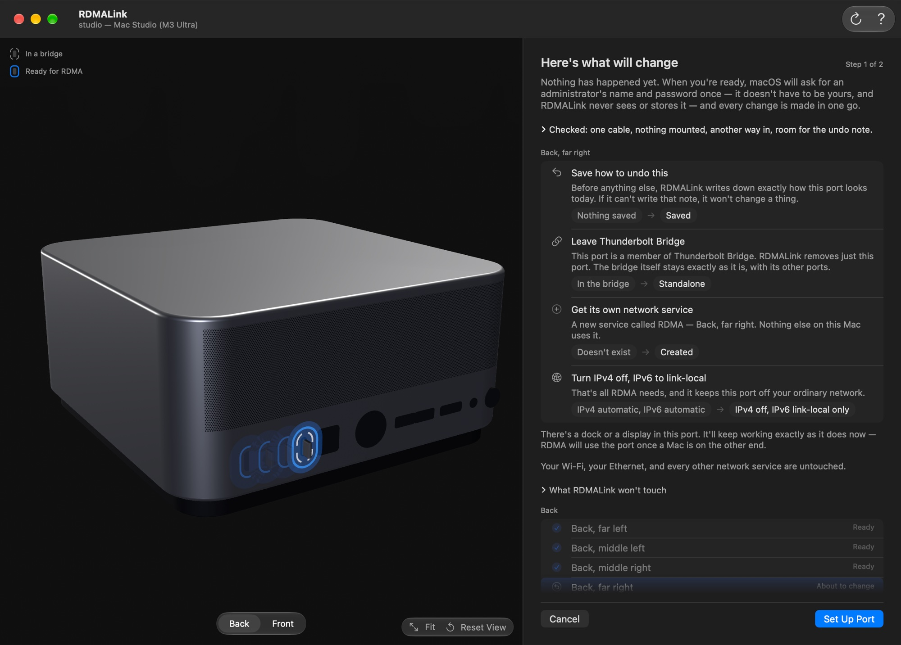
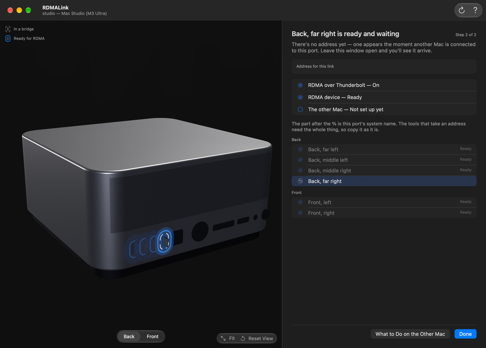
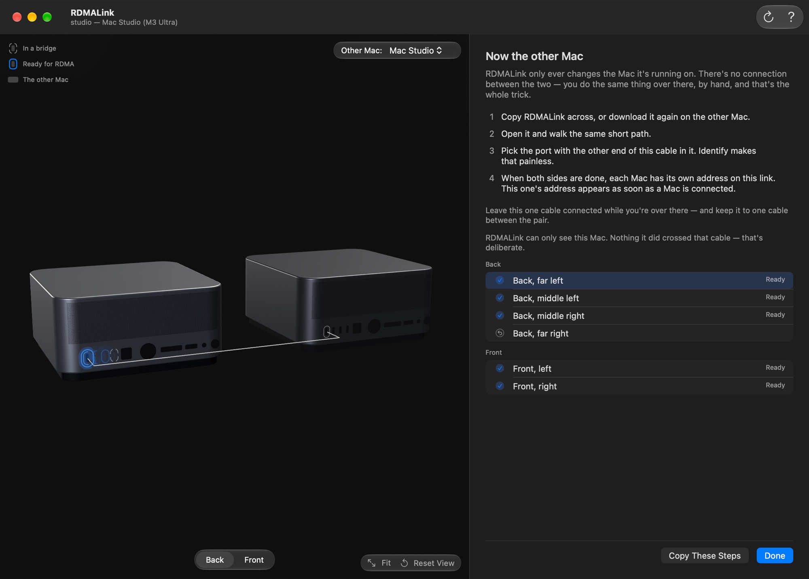
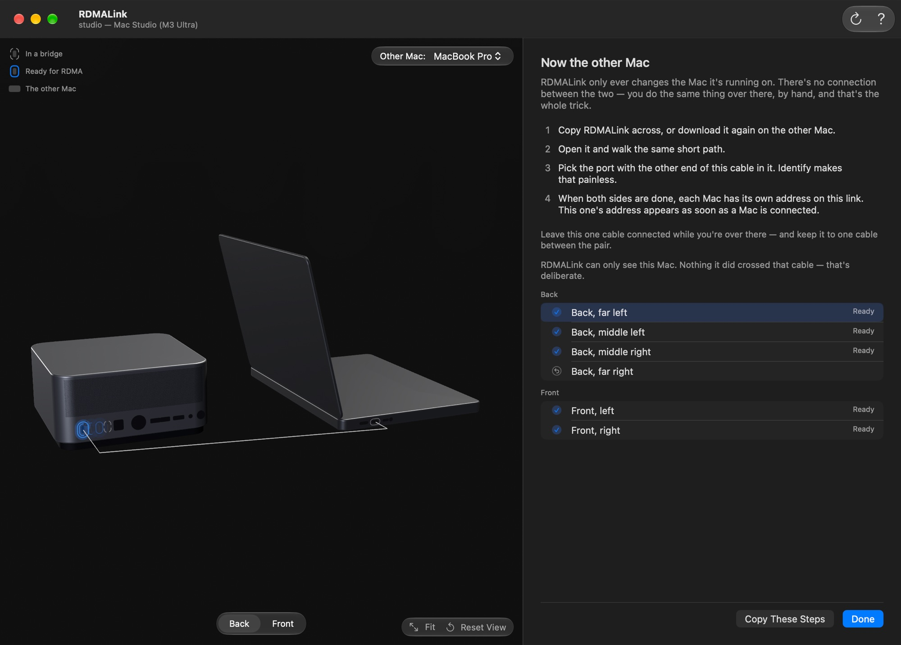
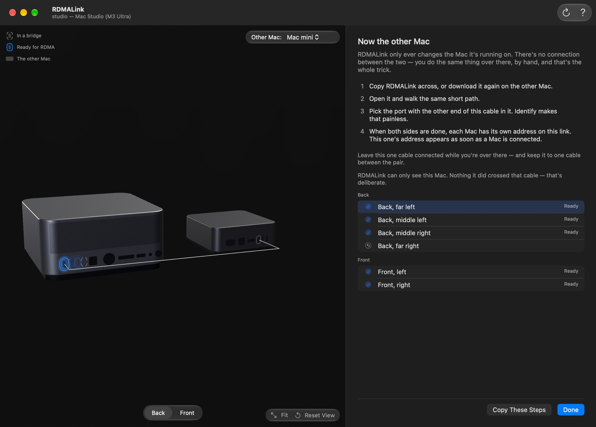
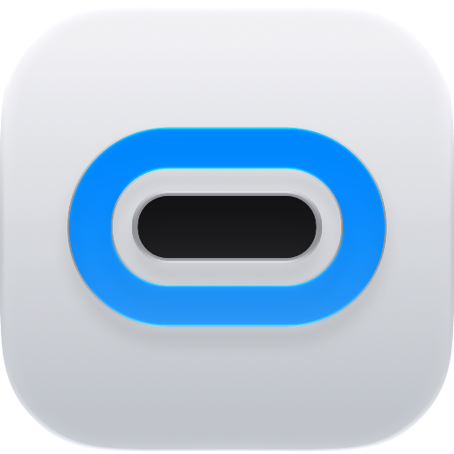

01
Choose
Click the port on the picture of your Mac, or pick it from the list. Identify Port… finds the one your cable is in.
With RDMALink you choose which Thunderbolt ports stay in Thunderbolt Bridge and which leave it. A port that leaves gets an IPv6 link-local address of its own, and you can cable it to another Mac for RDMA without creating a network loop.
brew install --cask dev7a/tap/rdmalink

macOS puts all your Thunderbolt ports in one bridge, and the bridge passes traffic from each port on to the others. Join two Macs with two cables, or three Macs in a ring, and the same traffic can keep going round, using up processor time and slowing the network down.
Apple's technote TN3205 says to turn Thunderbolt Bridge off for Macs connected in a loop. RDMALink lets you choose instead: the ports you cable to other Macs leave the bridge, and the rest stay in it.

Pick a Mac, drag to turn it, and hover over a port for its name. A ring of four arcs marks a Thunderbolt 5 port in Thunderbolt Bridge; a solid, brighter ring marks one set up for RDMA. Click a Thunderbolt port to see the change RDMALink makes.

Click the port on the picture of your Mac, or pick it from the list. Identify Port… finds the one your cable is in.

Every change with its before and after. Set Up Port asks for an administrator's password once.

Once another Mac is connected, the port has its own link-local address. Copy it, then set up the other end.
So each end of a cable is set up on its own Mac. What to Do on the Other Mac lists the steps and draws that Mac beside this one, with the cable between them. Pick Mac Studio, MacBook Pro or Mac mini. Until both ends are set up, keep that cable the only one between the pair; then plug in the next.



The port leaves Thunderbolt Bridge. The bridge and its other ports stay as they are.
The port gets a network service of its own, with IPv4 off and IPv6 link-local only.
Before it changes anything, it writes down how the port looked. Restore… puts it back.
Bridge membership has no public API, so RDMALink uses an undocumented one in macOS. If that is missing, the change is rolled back. On a Mac it doesn't recognize, it changes nothing.
Four Thunderbolt 5 ports on the back, plus two on the front on Ultra models.
Three Thunderbolt 5 ports, all on the back. The two on the front are USB-C.
The 14-inch and the 16-inch each have three Thunderbolt 5 ports: two on the left, one on the right.
RDMA over Thunderbolt needs Thunderbolt 5.
Needs macOS 27.

brew install --cask dev7a/tap/rdmalink
Or download it from GitHub and drag it to Applications. Before the first port, turn on RDMA over Thunderbolt on each Mac in System Settings › Privacy & Security › Developer Tools, then restart.